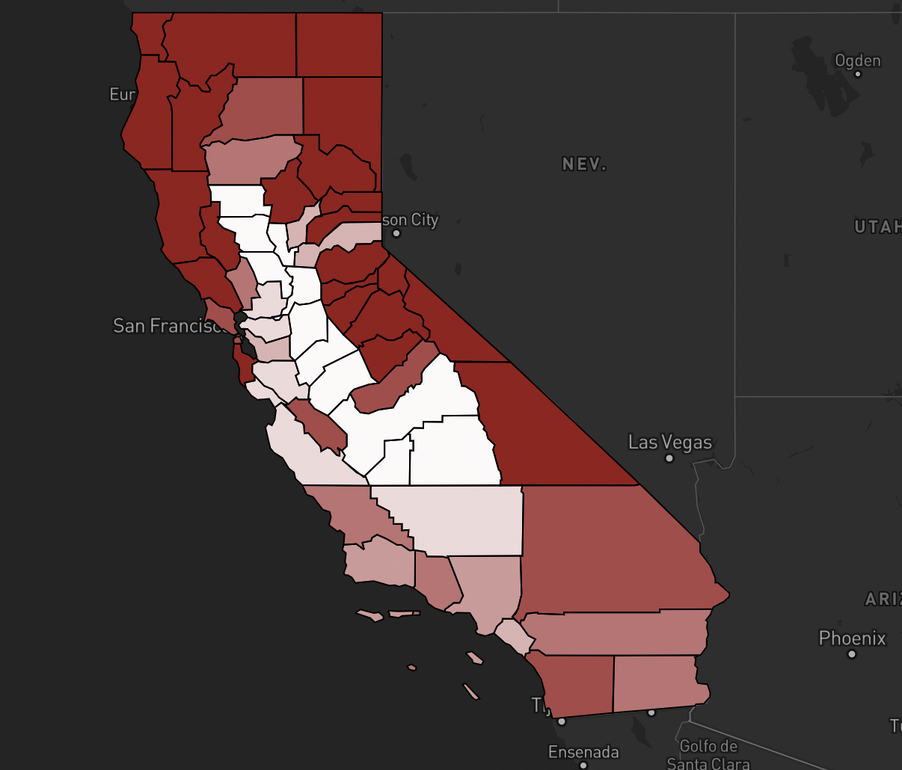
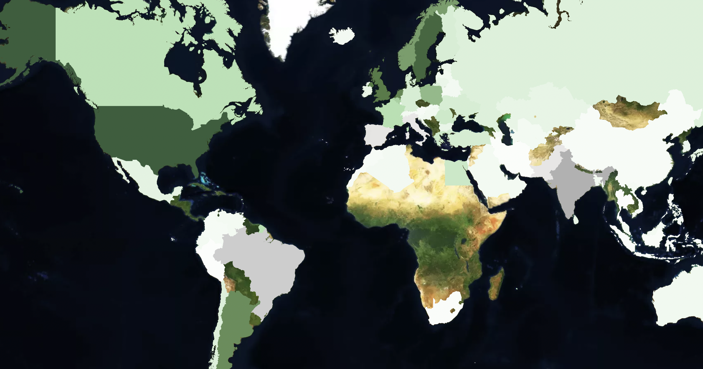

Hi,
I'm Sarah
Data Journalist @ Columbia Journalism School
... aspiring data journalist and current grad student at Columbia University

Select Projects
Here are some of the projects I have worked on for the Points Unknown Class.
You can find more on GitHub.



MapBox
Until recent years, India used to be one of the leading countries in the world in regards to wind power. However, the country saw its biggest decline in annual wind power generated this year with a 26 percent drop since the same time in 2021.